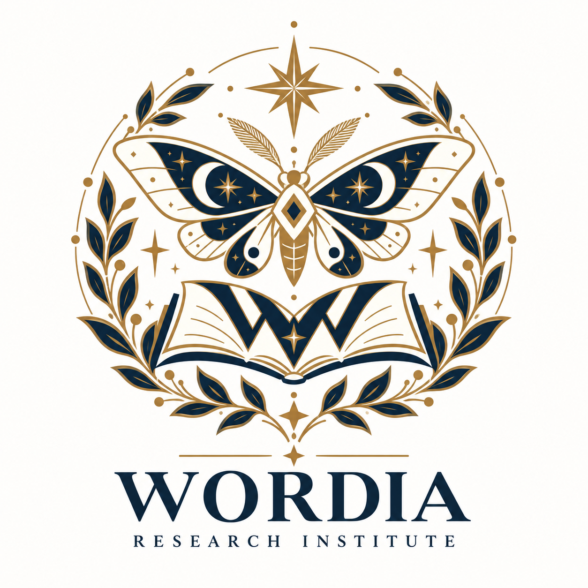

RESEARCH 01
住人形態・種族研究
9つの品詞種族と複合種族の肌色・身体的特徴を記録します。

WORDIA研究所は、言葉が住人として暮らす世界の構造・歴史・文化を調査し、観察記録を公開しています。
2026年10月12日付で研究所設立を告示しました。所長による設立声明と、研究所の活動方針をご案内します。
設立告示を読む ↗What if words were living beings?
WORDIA is a mysterious world where words have their own bodies, personalities, histories, and magical abilities. Nouns, verbs, adjectives, and other parts of speech exist as different species. A word's meaning shapes its magical powers, while its etymology reveals its ancestry.
The WORDIA Research Institute discovers, observes, and documents this extraordinary world. Explore our resident records, observation reports, and stories. Visitors can also take part as temporary field researchers and report word discoveries.
Information for International Visitors
Our website is currently available in Japanese only. Please use your browser's translation feature to explore the institute. An English version is planned for the future.
Resident Records → · Observation Stories → · Report a Discovery →
We look forward to welcoming researchers from around the world.
WORDIAは、言葉が身体・意思・歴史を持ち、独自の社会を築く世界です。人間世界とは独立していますが、言葉の使用や意味の変化を通じてつながっています。WORDIA研究所は、この世界を創造するのではなく、すでに存在する世界を発見し、観察・記録することを目的としています。
| 機関名 | WORDIA研究所（WORDIA Research Institute） |
|---|---|
| 研究対象 | 住人と種族、意味と魔法、文法・社会、語源・系譜、言語間交流 |
| 基本原則 | 品詞は種族、文の成分は一時的な役割。住人は独立した意思を持ちます。 |
| 時間 | WORDIAと人間世界では、時間は同じ速さで流れます。 |
| 活動内容 | 住人観察、資料編纂、研究報告、物語記録 |
| 活動状況 | 調査継続中 |
世界設定の一次公開資料：「WORDIA｜言葉が生きる魔法世界」世界観設定 Vol.1（2026年10月12日）
9つの品詞種族と複合種族の肌色・身体的特徴を記録します。
品詞という種族と、主語・動詞・目的語・補語など文章内の役割を区別して調べます。
派生語・複合語の親子関係、同形異義語の別個体性、未解明の出自を記録します。
意味が住人の能力として現れる仕組みと、意味変化による能力の変遷を調査します。
新語の誕生、使用減少に伴う休眠、再使用による覚醒を調べます。
借用語の移住、翻訳、地域差、人工言語世界などの関係を調査します。
観察記録を整理しています。住人の肖像や外見資料には暫定的なものも含まれます。
| 種族 | 肌の色 | 身体的特徴 |
|---|---|---|
| 名詞族 | 琥珀色 | 角、頑丈な骨格 |
| 動詞族 | 赤珊瑚色 | 尾、長い手足 |
| 形容詞族 | 薄紫色 | 特徴的な耳、細身 |
| 副詞族 | 空色 | 小さな翼、軽やかな身体 |
| 代名詞族 | 銀灰色 | 中性的で均整の取れた顔立ち |
| 前置詞族 | 翡翠色 | 小柄な体格、触角 |
| 接続詞族 | 黄金色 | 大きな翼、長い腕 |
| 限定詞族 | 桃色 | 大きな目、額の結晶 |
| 間投詞族 | 橙色 | 星形の瞳孔 |
複数の品詞を持つ住人は複合種族に属し、各種族の特徴を併せ持ちます。肌色は混ざり、所属種族が増えるほど白に近づきます。文中の役割が変わっても身体的特徴は変わりません。
設立告示、基礎調査報告、物語観察記録などを文書区分と番号で管理し、研究成果を公開します。
「基礎設定公開済み」は、リンク先のVol.1で設定が公開されていることを表します。個別の独立した研究論文が刊行されたことを意味しません。
品詞の種族、文の構造、住人の系譜を中心に調査しています。
英語世界と異なる文法・社会構造について調査構想を進めています。
計画的に成立した言語世界の歴史と発展を研究対象としています。
翻訳による往来や借用語の移動など、未解明の現象を扱います。
WORDIA研究所では、世界の観察記録、住人の肖像、研究報告、物語など、さまざまな形での参加を構想しています。臨時調査員は住人の発見報告に参加でき、正規研究員は承認制で物語観察・共同調査・世界の理の研究を行います。正規研究員募集要項はこちら →